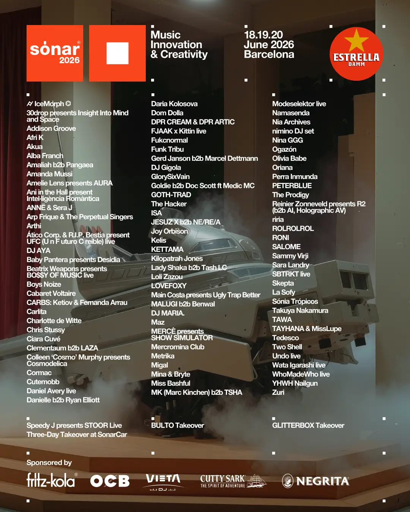

Sónar Barcelona · Fira Gran Via
98
artists
5
stages
18 → 20
June · Barcelona
Sónar, in brief
Sónar is three days and two nights at the Fira Gran Via in Barcelona — a complex built to swallow this kind of event. Five stages, one site, logistics that let you never waste time between sets. The festival has the particular quality of mixing very different formats without everything going sideways: from the darkest club to the most ambitious live show, all within a controlled perimeter.
This year, 98 artists on the bill. That's dense. We can't see everything — nobody can. But we've built our programme, and here's what convinced us to book the flight.
Sónar 2026 site map · Fira Gran Via, Barcelona — six stages, one site.
SonarLab x Rinse — the heart of it for us
The stage we're most interested in is the SonarLab x Rinse. A partnership with Rinse FM this year — the London radio station that shaped a large part of the UK bass and garage scene since the mid-2000s. Oriented towards drum'n'bass, UK bass and avant-garde techno, this is exactly where the festival happens for us. And the 2026 lineup is serious.
Goldie b2b Doc Scott ft Medic MC. We don't need to say much. Two absolute legends of British drum'n'bass sharing the same booth, with Medic MC on the mic — this is the kind of set that might not come around again anytime soon. Goldie founded Metalheadz, Doc Scott co-wrote some of the genre's most important tracks. Seeing them play together in 2026, at a festival, at SonarLab x Rinse — we're in.
Nia Archives is also there. She's made drum'n'bass what it hadn't dared to be for a while: emotional, sunny, without losing substance. Her debut album confirmed what we'd felt since her first EPs. Live, it's another dimension entirely.
And in a very different register, nimino at SonarVillage on Saturday night. British producer Milo Evans exploded in 2024 with "I Only Smoke When I Drink", 100 million streams, a sound somewhere between melodic house, UK garage and chill bass that sounds like no one else in his generation. His EP Creek released in early 2025 on Counter Records (Ninja Tune) confirmed it wasn't an accident. One to watch closely.
Goldie b2b Doc Scott ft Medic MC at SonarLab x Rinse, two pioneers of British drum'n'bass in the same booth. This is exactly why we're getting on a plane.
Sammy Virji — we meet him again in Barcelona
We saw him at Alexandra Palace in April, 10,000 people, sold out, surprise B2B with Barry Can't Swim. We saw him at Le Phantom in Paris in March, a night built from beginning to end with Nostalgia as the closing moment. And he's at SonarVillage in June.
Following his trajectory has become obvious. He's crossing a threshold, and SonarVillage confirms that this threshold is now international. Seeing him in that context, at that festival, after those two Paris and London nights, feels logical. And exciting.
What else we're watching
Outside of SonarLab, there are a few names catching our eye. Joy Orbison at SonarVillage — his approach to UK garage and house always has something off-kilter about it, a way of playing with expectations that makes him hard to categorise and easy to follow. Two Shell at SonarHall, who probably represents one of the most singular propositions in the current UK electronic scene. And Amaliah b2b Pangaea, a b2b we're watching with particular curiosity.
The SonarClub also has its share of surprises. The Prodigy headlining on Saturday — hard to not have one eye in there, even if it's not our main territory. And Charlotte de Witte with her AURA live set, a format she's been developing for a few months that we haven't seen yet.

Full Sónar 2026 lineup · © Sónar Festival
Our picks, stage by stage
We're ready
Sónar is the kind of festival where you arrive with a programme and end up discovering things you didn't plan for. That's part of what makes it interesting. The 2026 lineup is solid enough that we won't be disappointed, and open enough that there'll be surprises.
We'll be back with photos, impressions, and probably a full live report of what we took away. June 18-20, Barcelona. We're ready.